8 Harjoitus 6: Paikkatietoaineiston editointi
8.0.0.1 Harjoituksen sisältö
Harjoituksessa digitoidaan uusi vektorimuotoinen paikkatietoaineisto.
8.0.0.2 Harjoituksen tavoite
Opiskelija oppii kuinka paikkatietoaineistoja tuotetaan ja editoidaan.
8.0.1 Valmistautuminen
Luo uusi QGIS-projekti ja tallenna se nimellä (Projekti → Tallenna nimellä…) “QGIS_harjoitus_6”.
8.0.2 Vektoriaineiston (GeoPackage) luominen
Luodaan uusi GeoPackage-aineisto valitsemalla työkalupalkista Uusi GeoPackage-taso…
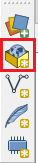
Tee alla näkyvät valinnat GeoPackage-ikkunaan. Muista nimetä aineisto sopivalla tavalla (tässä esim. alueet), valitse Geometriatyyppi-kohtaan MultiPolygoni, valitse koordinaattijärjestelmäksi ETRS89 / TM35FIN(E,N) EPSG:3067 (harjoittelemme digitointia Espoossa käytössämme Suomen valtakunnallinen tasokoordinaattijärjestelmä TM35FIN). Muista vielä lopuksi lisätä Nimi-attribuutti Lisää ominaisuustietolistaan -toiminnolla.
Avaa juuri luomasi tason attribuuttitaulukko ja tarkista, että se on tyhjä. Tarkista myös, että määrittelemäsi kentät näkyvät sarakkeina.
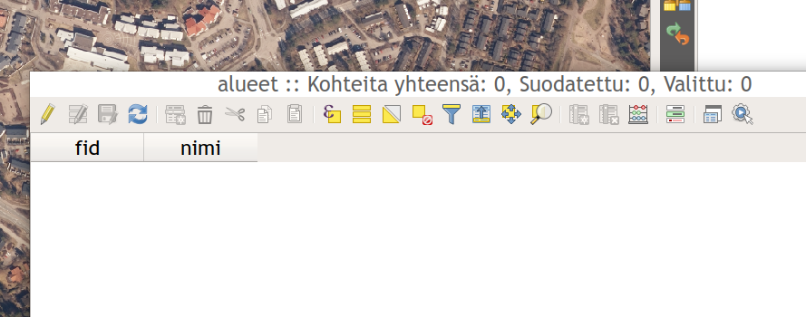
Fid-kenttä muodostuu automaattisesti ja Nimi-kentän loimme itse äskeisessä määrittelyikkunassa.
Tarkastellaan nyt attribuutteja lähemmin Tason ominaisuudet -ikkunassa. Avaa juuri luomasi Alueet-tason Tason ominaisuudet -ikkuna ja valitse vasemmalta Attribuutit (aikaisemmin Fields). Attribuutit-välilehdessä pystytään muokkaamaan attribuuttitaulun tietorakennetta. Aseta muokkaus päälle klikkaamalla kynäikonia. Uuden kentän pystyt lisäämään Uusi kenttä -painikkeesta, joka on varustettu keltaisella tähti-ikonilla.
Anna uudelle kentälle nimi “aluetyyppi” ja aseta tyypiksi “Teksti” ylläolevan kuvan mukaisesti. Klikkaa OK lisätäksesi uuden kentän listaan. Klikkaa tämän jälkeen uudestaan kynäikonia lopettaaksesi muokkauksen ja tallenna muutokset.

8.0.3 Digitoitavan tason tietorakenne
Jatketaan edelleen Tason ominaisuudet -ikkunassa. Valitse nyt vasemmalta Attribuuttilomake-välilehti. Tässä välilehdessä voit määrittää sääntöjä ja rajoituksia laatimillesi tietokentille (ts. taulun sarakkeille). Kyseiset määritykset auttavat säilyttämään tietorakenteen sekä itse tiedon laadun ja helpottavat myös digitointia.
Valitse Käytettävissä olevista käyttöliittymäelementit -kohdasta aluetyyppi-kenttä ja valitse Muokkauksen tyyppi -kohdasta Arvoluettelo alla olevan kuvan tapaan. Mikäli et näe nyt aluetyyppi-saraketta, sulje vielä Tason ominaisuudet -ikkuna ja avaa se uudelleen.
 Arvoluettelon avulla käyttäjän on mahdollista määrittää arvoja vetovalikosta editointia tehdessään. Muokkaa soluja tuplaklikkaamalla. Määritä arvot kuvassa näkyvän luettelon mukaisesti. Kirjaa myös aluetyypeille kuvaukset halutessasi. Kuvauksista on hyötyä yleisesti tietorakenteiden eheyden ylläpitämiseksi. Kun olet valmis, klikkaa OK palataksesi karttanäkymään.
Arvoluettelon avulla käyttäjän on mahdollista määrittää arvoja vetovalikosta editointia tehdessään. Muokkaa soluja tuplaklikkaamalla. Määritä arvot kuvassa näkyvän luettelon mukaisesti. Kirjaa myös aluetyypeille kuvaukset halutessasi. Kuvauksista on hyötyä yleisesti tietorakenteiden eheyden ylläpitämiseksi. Kun olet valmis, klikkaa OK palataksesi karttanäkymään.
8.0.4 Pohjakartan lisääminen
Voit käyttää digitoinnin pohjana Maanmittauslaitoksen ilmakuvia. Lisää nyt ortoilmakuva L4131F.jp2-rasteritiedosto kansiosta …/kurssihakemisto/MML/Ortoilmakuvat/ QGISiin. Muista, että myös rasteriaineistot saat käyttöösi helposti raahaamalla tiedoston karttaikkunaan tai Tasot-paneeliin.

8.0.5 Digitoinnin aloittaminen
Valitse kartalta mieleisesi alue, jota lähdet digitoimaan. Zoomaa tarpeeksi lähelle, jotta erotat digitoitavat alueet hyvin (esim. rakennukset).
 Tarttumisen työkalut - työkalupalkin saa kiinnitettyä käyttöliittymään (ellei se jo siinä ole) joko…
1 … painamalla QGISin käyttöliittymän reunoilla hiiren oikealla ja rastittamalla Työkalut-kohdan alta Tarttumisen työkalut tai sitten
2 … avaamalla erillisen ikkunan tarttumisen asetuksille ylämenusta Työkalut → Tarttumisen työkalut.
Aktivoi itse työkalu käyttöösi työkalupakistasi löytyvästä punaisesta magneetti-ikonista ja aseta sen asetukset seuraavasti.
Tarttumisen työkalut - työkalupalkin saa kiinnitettyä käyttöliittymään (ellei se jo siinä ole) joko…
1 … painamalla QGISin käyttöliittymän reunoilla hiiren oikealla ja rastittamalla Työkalut-kohdan alta Tarttumisen työkalut tai sitten
2 … avaamalla erillisen ikkunan tarttumisen asetuksille ylämenusta Työkalut → Tarttumisen työkalut.
Aktivoi itse työkalu käyttöösi työkalupakistasi löytyvästä punaisesta magneetti-ikonista ja aseta sen asetukset seuraavasti.
 Asetuksissa määritetään tarttumiseen käytettävä yksikkö (metri) ja etäisyys (5 metriä). Lisäksi asetetaan tarttumisen kohdistuvan aktiiviseen tasoon, sen taitepisteisiin ja/tai segmentteihin sekä myös Topologinen muokkaus ja Tarttuminen risteyksessä (Snapping on intersection).
Asetuksissa määritetään tarttumiseen käytettävä yksikkö (metri) ja etäisyys (5 metriä). Lisäksi asetetaan tarttumisen kohdistuvan aktiiviseen tasoon, sen taitepisteisiin ja/tai segmentteihin sekä myös Topologinen muokkaus ja Tarttuminen risteyksessä (Snapping on intersection).
 Klikkaa seuraavaksi Lisää monikulmiokohde -työkalua ja aloita digitointi.
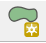
Muista, että voit muokata Tarttumisen asetuksia palaamalla yllä kuvattuun ikkunaan ja jättämällä se ikkunan sivuun muokataksesi asetuksia nopeasti. Digitoi nyt 5-8 polygonia. Kun olet valmis, klikkaa jälleen kynä-ikonia lopettaaksesi ja tallentaaksesi editoinnin.
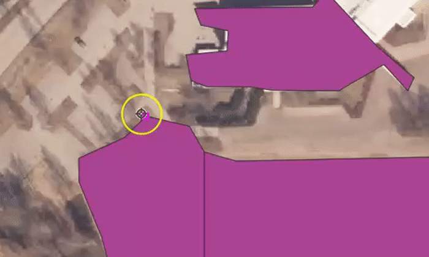
Päällekkäisten kohteiden syntymisen voi myös välttää alla olevan animaation tavalla.
Klikkaa seuraavaksi Lisää monikulmiokohde -työkalua ja aloita digitointi.
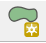
Muista, että voit muokata Tarttumisen asetuksia palaamalla yllä kuvattuun ikkunaan ja jättämällä se ikkunan sivuun muokataksesi asetuksia nopeasti. Digitoi nyt 5-8 polygonia. Kun olet valmis, klikkaa jälleen kynä-ikonia lopettaaksesi ja tallentaaksesi editoinnin.
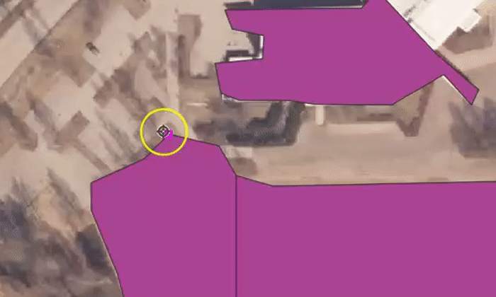
Päällekkäisten kohteiden syntymisen voi myös välttää alla olevan animaation tavalla.

Tämän saavuttaaksesi voit aktivoida Vältä leikkauksia -valinnan päälle Avaa tarttumisen asetukset… -valikosta. Avaa ensin Tarttumisen työkalut -paneelista Avaa tarttumisen asetukset.
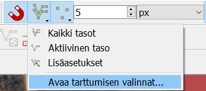 Näin sinulle aukeaa alla olevan mukainen tarttumisen asetukset määrittelyikkuna, jossa voit tehdä määrityksiä muun muassa leikkausten suhteen. Leikkauksilla viitataan tässä kohteiden niin sanottuihin intersektioihin. > Psst! Muista tallentaa QGIS-projekti harjoituksen lopuksi.
8.0.6 Lisätehtävä: CAD-digitointi
Voit kokeilla myös CAD-pohjaista digitointia, joka on kehittynyt verrattain paljon QGISin uudessa versiossa. Työkalut saat esiin lisäämällä Digitoinnin lisätyökalut -ylämenusta Näytä → Työkalut → Digitoinnin lisätyökalut.
Kokeile erilaisia työkaluja, esimerkiksi Täytä piiri -työkalua. Tätä voit hyödyntää esimerkkitapauksena peltoja digitoidessa. Kuvitellaan, että peltojen sisään jää aina välillä pieniä metsäsaarekkeita, jotka olisi digitoitava
 metsä-kohteiksi. Täytä piiri -työkalulla pystyt irrottamaan alueen omaksi objektiksi (ks. kuva alla).
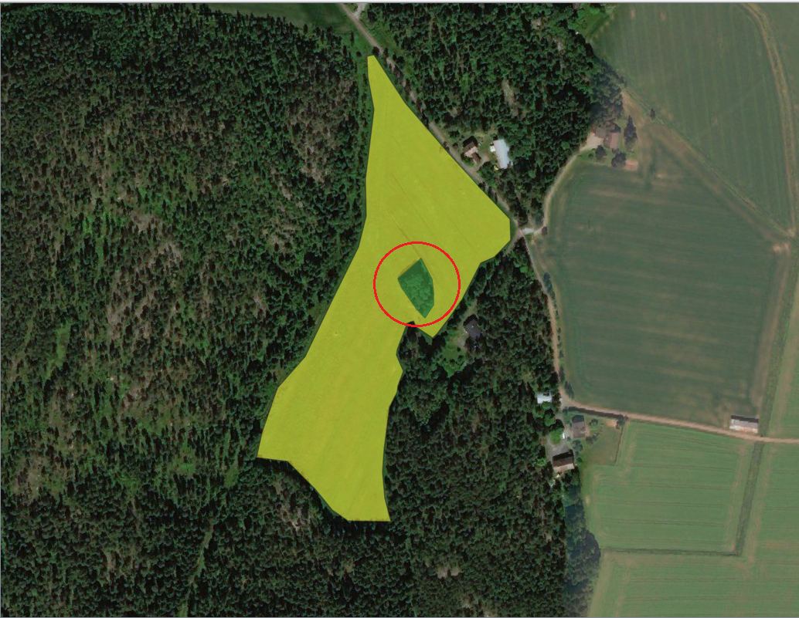
### Lisätehtävä: ominaisuustietojen lisääminen
Seuraavaksi laskemme pinta-alan ominaisuustietoja edellä muodostettuun paikkatietoaineistoon. Avaa Alueet-tason ominaisuustietotaulu (attribuuttitaulu).
metsä-kohteiksi. Täytä piiri -työkalulla pystyt irrottamaan alueen omaksi objektiksi (ks. kuva alla).
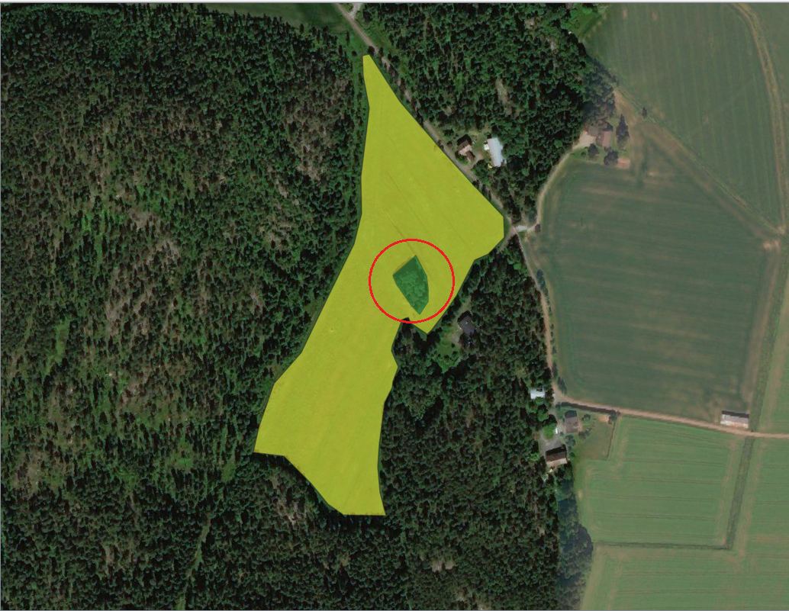
### Lisätehtävä: ominaisuustietojen lisääminen
Seuraavaksi laskemme pinta-alan ominaisuustietoja edellä muodostettuun paikkatietoaineistoon. Avaa Alueet-tason ominaisuustietotaulu (attribuuttitaulu).
 Laita muokkaustila taas päälle kynäikonista ja muokkaa muutamaa Nimi-kentän alueen nimeä samalla tavalla kun tekisit laskentataulussa (tuplaklikkaamalla). Huomaa, että muokkaaminen on mahdollista vain jos muokkaustila on päällä.
Avaa nyt Kentän arvojen laskin -työkalu seuraavan pikakuvakkeen avulla:
Tällä toiminnolla voimme luoda uusia tai päivittää jo olemassa olevia ominaisuustietotaulun kenttiä. Pinta-alan laskentaa varten muunnetaan neliömetrit neliökilmetreiksi jakamalla pinta-ala 1 000 000:lla. Kirjoitetaan Lauseke-kenttään kaava $area / 1000000.
Laita muokkaustila taas päälle kynäikonista ja muokkaa muutamaa Nimi-kentän alueen nimeä samalla tavalla kun tekisit laskentataulussa (tuplaklikkaamalla). Huomaa, että muokkaaminen on mahdollista vain jos muokkaustila on päällä.
Avaa nyt Kentän arvojen laskin -työkalu seuraavan pikakuvakkeen avulla:
Tällä toiminnolla voimme luoda uusia tai päivittää jo olemassa olevia ominaisuustietotaulun kenttiä. Pinta-alan laskentaa varten muunnetaan neliömetrit neliökilmetreiksi jakamalla pinta-ala 1 000 000:lla. Kirjoitetaan Lauseke-kenttään kaava $area / 1000000.
 Painamalla OK saat laskettua kunkin alueen pinta-alan omaan kenttäänsä:
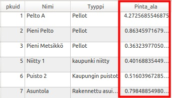
Painamalla OK saat laskettua kunkin alueen pinta-alan omaan kenttäänsä:
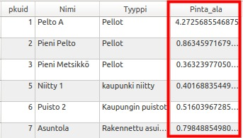
#Harjoitus 7: Paikkatietoanalyysit
####Harjoituksen sisältö Harjoituksessa tutustutaan QGISin erilaisiin paikkatietoanalyyseihin.
####Harjoituksen tavoite Koulutettava oppii käyttämään eri aineistoille tarkoitettuja paikkatietoanalyysejä tarkoituksenmukaisesti.
###Valmistautuminen
Luo uusi QGIS-projekti ja tallenna se nimellä (Projekti → Tallenna nimellä…) “QGIS_harjoitus_7”.
Lisää projektiin kunta1000k_2017.gpkg-tiedosto (…/kurssihakemisto/Tilastokeskus/kunnat2017/), jossa on Suomen kuntarajat.
Lisää karttaprojektiin vielä Maanmittauslaitoksen 1:1M yleiskartan TieViiva-aineisto (kansiosta …/kurssihakemisto/MML/YK_1M/).
Voit asettaa kunnat-monikulmion täytevärin pois ja saada siten tieviiva-aineiston paremmin näkyviin:
 Karttanäkymä näyttää nyt kunkin väriasetuksia lukuunottamatta tältä:
Karttanäkymä näyttää nyt kunkin väriasetuksia lukuunottamatta tältä:
 Voit tarkistaa/muokata projektisi koordinaattijärjestelmän asetuksia Projekti → Properties → Koordinaattijärjestelmä -välilehdessä tai klikkaamalla oikeasta alareunasta:
Voit tarkistaa/muokata projektisi koordinaattijärjestelmän asetuksia Projekti → Properties → Koordinaattijärjestelmä -välilehdessä tai klikkaamalla oikeasta alareunasta:
 Kummatkin tavat avaavat projektin koordinaattijärjestelmän määrityslomakkeen. Tarkista, että järjestelmä on ETRS89 / ETRS-TM35FIN.
Muista, että voit lisätä ongelmitta projektiisi aineistoja eri karttaprojektioissa. Monet analyysityökalut eivät kuitenkaan toimi, jos analyysin lähtöaineistot eivät ole samassa koordinaattijärjestelmässä.
Kummatkin tavat avaavat projektin koordinaattijärjestelmän määrityslomakkeen. Tarkista, että järjestelmä on ETRS89 / ETRS-TM35FIN.
Muista, että voit lisätä ongelmitta projektiisi aineistoja eri karttaprojektioissa. Monet analyysityökalut eivät kuitenkaan toimi, jos analyysin lähtöaineistot eivät ole samassa koordinaattijärjestelmässä.
Huomautus GK-koordinaatiston EPSG-koodeista! Suomalaiset koordinaattijärjestelmät (vanhat ja uudet) ovat pääosin hyvin tuettuina QGIS-ohjelmistossa. On kuitenkin huomautettava, että EPSG-määrittelyissä on lievää epäjohdonmukaisuutta. Esimerkiksi tarkemmat GK-koordinaattijärjestelmän koodit löytyvät EPSG:n luettelosta kahteen kertaan: EPSG:3126 – EPSG:3138 koodeilla löytyvät koordinaattijärjestelmät ETRS-GK19FIN - ETRS-GK31FIN. Nämä ovat kuitenkin ”virheellisiä”, keskimeridiaanin koordinaatti on aina 500 000. OIKEAT EPSG-koodit: EPSG:3873 - EPSG:3885 VIRHEELLISET EPSG-koodit: EPSG:3126 - EPSG:3138
###Vektorianalyysit Tässä harjoituksessa on tarkoitus etsiä ne kunnat, joiden alueella kulkee suomalainen versio kuuluisasta Route 66 -tiestä. Lyhyesti harjoituksen kulku on seuraava: - Valitaan tieaineistosta ne tieviivat, joiden numero on 66 - Tehdään spatiaalinen analyysi kunta- ja tieviiva-aineiston kanssa, jonka myötä viiva-aineisto saa kunta-aineiston sisältämät tiedot - Yhdistetään tieviivat kunnan nimen avulla
Monista TieViiva taso hiiren oikealla näppäimellä aukeavasta valikosta Monista taso vaihda uuden tason nimeksi Finnish Route 66:ksi samasta valikosta Nimeä taso. Samasta valikosta löytyy myös Suodata -toiminto, joka määrittelee, mitä aineiston kohteita tämä taso käyttää.
Kirjoita Suodattimena käytettävä lauseke -kenttään ”Tienumero” = 66. Saat kentän nimen suoraan lausekkeeseen Tietokentät-kohdasta tuplaklikkaamalla ja Operaattorit-kuvakkeita klikkaamalla. Kun painat OK, karttanäkymässä näkyy enää suodattimen läpäisevät kohteet.
 Seuraavaksi lähdemme käsittelemään aineistoja Vektori-ylämenusta, josta löytyvät ensisijaiset työkalut vektorianalyysien toteuttamiseen:
Seuraavaksi lähdemme käsittelemään aineistoja Vektori-ylämenusta, josta löytyvät ensisijaiset työkalut vektorianalyysien toteuttamiseen:

Käynnistä Ristiinleikkaus(intersection…)-työkalu Geoprosessointi-valikosta. Määrittele leikattavaksi tasoksi tiestöaineisto ja leikkaavaksi tasoksi kuntaraja-aineisto:
 Suorita analyysi painamalla Suorita ja paina sen jälkeen Sulje. Analyysi luo uuden väliaikaisen tulostason nimeltä Ristiinleikkaus (intersection).
Karttaikkunassa aineisto näyttää samalta kuin alkuperäinen aineisto. Vertaile tasojen (Finnish Route 66 ja Ristiinleikkaus (intersection)) ominaisuustietoja. Mitä huomaat?
Seuraavaksi voit visualisoida syntyneen tulostason tieviivat kunkin kunnan osalta eri välillä: määrittele kuvaustekniikka luokittelemalla tiestö kunnan nimen perusteella käyttäen kenttää Nimi.
Aktivoi Näytä kohteiden lukumäärä -toiminto (paina hiiren oikealla näppäimellä tason nimen päällä Tasoluettelossa).
Suorita analyysi painamalla Suorita ja paina sen jälkeen Sulje. Analyysi luo uuden väliaikaisen tulostason nimeltä Ristiinleikkaus (intersection).
Karttaikkunassa aineisto näyttää samalta kuin alkuperäinen aineisto. Vertaile tasojen (Finnish Route 66 ja Ristiinleikkaus (intersection)) ominaisuustietoja. Mitä huomaat?
Seuraavaksi voit visualisoida syntyneen tulostason tieviivat kunkin kunnan osalta eri välillä: määrittele kuvaustekniikka luokittelemalla tiestö kunnan nimen perusteella käyttäen kenttää Nimi.
Aktivoi Näytä kohteiden lukumäärä -toiminto (paina hiiren oikealla näppäimellä tason nimen päällä Tasoluettelossa).

Tasoluettelossa luokittelun pitäisi näyttää suunnilleen seuraavalta (värit ja viivojen paksuus on sen mukainen kuin olet määritellyt):

Seuraavaksi voimme yhdistää erilliset tieviivat Sulauta-työkalun (Dissolve) avulla. Valitse työkalu Vektori-Geoprosessointi → Sulauta. Sulauta tieviivat kunnan nimen (tai numeron) perusteella ja tallenna lopputulos kurssihakemistoon haluamallasi nimellä (esimerkiksi kunta_sulautettu.shp). Täytä asetukset Sulauta-ikkunassa kuvan mukaisesti:
 Paina Suorita ja sitten Sulje.
Voit kopioida aiemmin luodun tason tyylin helposti uudelle aineistoille. Valitse hiiren oikealla näppäimellä avautuvasta valikosta Tyyli → Kopioi tyyli. Valitse äsken luotu taso ja Tyyli → Liitä tyyli. Kun laitat vielä kohteiden lukumäärän näkyviin, niin lopputuloksen pitäisi tasoluettelossa olla seuraava:
Paina Suorita ja sitten Sulje.
Voit kopioida aiemmin luodun tason tyylin helposti uudelle aineistoille. Valitse hiiren oikealla näppäimellä avautuvasta valikosta Tyyli → Kopioi tyyli. Valitse äsken luotu taso ja Tyyli → Liitä tyyli. Kun laitat vielä kohteiden lukumäärän näkyviin, niin lopputuloksen pitäisi tasoluettelossa olla seuraava:
 Lopuksi voimme laskea, kuinka pitkä pätkä tietä nro. 66 osuu kunkin kunnan alueelle. Avaa ominaisuustietotaulukko ja käytä Kentän arvojen laskin-työkalua. Luo uusi kenttä, jossa on kunkin tieviivan pituus hyödyntämällä Geometria-ryhmästä $length-funktiota.
Lopuksi voimme laskea, kuinka pitkä pätkä tietä nro. 66 osuu kunkin kunnan alueelle. Avaa ominaisuustietotaulukko ja käytä Kentän arvojen laskin-työkalua. Luo uusi kenttä, jossa on kunkin tieviivan pituus hyödyntämällä Geometria-ryhmästä $length-funktiota.
 Psst! Muista tallentaa QGIS-projekti harjoituksen lopuksi.
Psst! Muista tallentaa QGIS-projekti harjoituksen lopuksi.
##Lisätehtävä: ominaisuustietojen lisääminen ja tarkastelu
Lopuksi voimme laskea, kuinka suuri osa suhteellisesti (osuus koko pituudesta) tietä nro. 66 osuu kunkin kunnan alueelle. Prosenttilaskun toimittamiseksi tarvitset tiedon tiesegmenttien yhteenlasketusta kokonaispituudesta eli summasta, jonka saat käyttöösi Kenttien tilastolliset tunnusluvut -työkalun avulla: avaa yläpalkista Prosessointi → Työkalut ja kirjoita hakukenttään Kenttien tilastolliset tunnusluvut.
 Anna avautuvassa ikkunassa kentäksi, josta tilastot lasketaan, edellisessä tehtävässä laskemasi pituus-kenttä:
Prosenttilasku tehdään samalla tavalla kuin pituuden tai pinta-alan laskenta eli tehdään uusi sarake, jonka kohteille lasketaan arvot seuraavan funktion avulla (heittomerkkien sisään jäävä sana/merkkijono viittaa sarakkeen nimeen ja ‘summa’ laskemaasi arvoon):
(“Pituus” / summa)*100
Lopuksi voit visualisoida kartalle kunkin kunnan osuuden haluamallasi tavalla.
Anna avautuvassa ikkunassa kentäksi, josta tilastot lasketaan, edellisessä tehtävässä laskemasi pituus-kenttä:
Prosenttilasku tehdään samalla tavalla kuin pituuden tai pinta-alan laskenta eli tehdään uusi sarake, jonka kohteille lasketaan arvot seuraavan funktion avulla (heittomerkkien sisään jäävä sana/merkkijono viittaa sarakkeen nimeen ja ‘summa’ laskemaasi arvoon):
(“Pituus” / summa)*100
Lopuksi voit visualisoida kartalle kunkin kunnan osuuden haluamallasi tavalla.
#Harjoitus 8: QGISin lisäosat
###Harjoituksen sisältö Harjoituksessa asennetaan muutama QGIS-lisäosa.
###Harjoituksen tavoite Koulutettava oppii asentamaan QGIS-lisäosia ja ymmärtää niiden toimintaperiaatteet.
###Valmistautuminen Käynnistä QGIS-ohjelmisto. Avaa uusi QGIS-projekti ja tallenna se nimellä (Projekti → Tallenna nimellä…) “QGIS_harjoitus_8”. Lataa projektiin seuraavat aineistot: …/kurssihakemisto/MML/Korkeusmalli_2m/L4133B.asc (korkeusmalli) ja …/kurssihakemisto/HSY/Vaestotietoruudukko_2019.gpkg
###Lisäosien hallinta Lisäosia lisätään käyttöön päävalikosta Lisäosat → Hallitse ja asenna lisäosia… -valikon kautta. Valitse Asennettu-välilehti ja saat esille kaikki asennetut lisäosat. Huomaa, että suurinta osaa niistä ei ole aktivoitu. Lisäosien aktivointi lisää erilaisia valikkoja ja paneeleja QGISin käyttöliittymään. Siksi on hyödyllistä piilottaa ne joita ei käytetä.
###QuickMapServices QuickMapServices (QMS) -lisäosan kautta saat QGISin karttaprojektiin erilaisia taustakarttoja verkosta, kuten OpenStreetMaps, Google Maps tai Bing Maps. Avaa Lisäosat → Hallitse ja asenna lisäosia…, valitse Kaikki-välilehti ja etsi quickmapservices tekstillä: